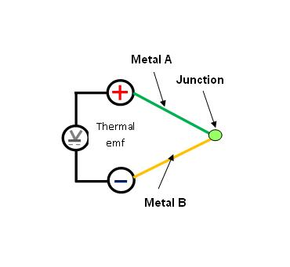

तापमान संवेदक (थर्मोकपल) की विशेषता
पूर्वापेक्षा
थर्मोकपल पर प्रयोग करने से पहले, छात्रों को इनका ज्ञान होना चाहिए :
- तापमान मापन का महत्व
- विभिन्न तापमान के स्केल्स
- तापमान मापन के विभिन्न तरीके
थर्मोइलेक्ट्रिक इफ़ेक्ट
थर्मोइलेक्ट्रिक प्रभाव तापमान अंतर का विद्युत वोल्टेज में प्रत्यक्ष रूपांतरण है। जब दोनों तरफ तापमान में अंतर होता है, तो एक थर्मोइलेक्ट्रिक डिवाइस वोल्टेज उत्पन्न करता है। इसके विपरीत जब उस पर वोल्टेज लागू की जाती है, तो यह तापमान में अंतर पैदा करता है।
तीन बुनियादी इफेक्ट्स होते हैं, जो थर्मोइलेक्ट्रिक डिवाइस के कार्य सिद्धांत की व्याख्या करते हैं।
सीबेक इफ़ेक्ट: जब दो असामान धातुओं से बने तार दोनों सिरों पर जोड़े जाते हैं और सिरों में से एक को गरम किया जाता है, तो थर्मोइलेक्ट्रिक सर्किट में एक निरंतर करंट बहता है। जर्मन-एस्टोनियाई भौतिक विज्ञानी थॉमस सीबेक ने 1821 में यह खोज की थी। इसे कहते हैं थर्मोइलेक्ट्रिक इफ़ेक्ट या सीबेक इफ़ेक्ट.
 पेल्टियरइफ़ेक्ट: पेल्टियर ने पाया कि दो असमान धातुओं के जंक्शन गर्म या ठंडे हो जाते हैं, यह इस पर निर्भर करता है कि उसमें विद्युत प्रवाह किस दिशा में बहता है। एक दिशा में करंट बहने से गर्मी उत्पन्न होती है, यदि धारा को उलट दिया जाता है तो गर्मी अवशोषित हो जाती है। इस इफ़ेक्ट में हमेशा जंक्शनों के जोड़े शामिल होते हैं। पल्टिएर इफ़ेक्ट को करंट की पहली घात (पॉवर) के अनुपात में पाया जाता है, न कि इसके वर्ग के, जैसा कि पूरे सर्किट में प्रतिरोध के कारण गर्मी का अपरिवर्तनीय निर्माण होता है। वास्तव में यह डिवाइस गर्मी को एक तरफ से दूसरी तरफ स्थानांतरित करता है।

थॉम्पसन इफ़ेक्ट: यह एक कंडक्टिंग मटेरियल को गर्म या ठंडा करते समय टेम्परेचर ग्रेडिएंट के अस्तित्व का वर्णन करता है। दो बिंदुओं के बीच तापमान में अंतर वाला कोई भी करंट-वाहक कंडक्टर (सुपरकंडक्टर को छोड़कर), सामग्री के आधार पर या तो गर्मी को अवशोषित या उत्सर्जित करेगा।

थर्मोकपल का परिचय
थर्मोकपल क्या है ? एक थर्मोकपल दो अलग-अलग धातुओं के बीच एक जंक्शन है, जो तापमान के अंतर के अनुसार वोल्टेज का उत्पादन करता है। जब असमान धातुओं से बने दो तार दोनों सिरों पर जुड़ जाते हैं और सिरों में से एक को गरम किया जाता है, तो एक निरंतर करंट थर्मोइलेक्ट्रिक सर्किट में बहता है (थर्मोइलेक्ट्रिक इफ़ेक्ट या सीबेक इफ़ेक्ट)।
रेफरेन्स जंक्शन (कोल्ड जंक्शन) की आवश्यकता: थर्मोकपल्स में, विद्युत प्रवाह के कारण वोल्टेज निर्माण होता है। यह करंट प्रवाह कंडक्टिंग तार के दो सिरों पर तापमान में अंतर पर निर्भर करता है। थर्मोकपल हमेशा तापमान में अंतर को मापते हैं न कि पूर्ण तापमान को।
एक जंक्शन के तापमान को मापने के लिए, दूसरे जंक्शन को एक संदर्भ तापमान पर रखा जाता है। चूँकि यह आइस बाथ का उपयोग करके किया जाता है, इसे सामान्य रूप से कोल्ड जंक्शन कहा जाता है।
संदर्भ तापमान के लिए आइस बाथ का उपयोग करना लेबोरेटरी कैलिब्रेशन के लिए उपयोगी है, लेकिन अधिकांश माप और नियंत्रण अनुप्रयोगों के लिए सुविधाजनक नहीं है। आइस बाथ के बजाय, थर्मिस्टर या डायोड जैसे थर्मली सेंसिटिव डिवाइस का उपयोग करके कोल्ड जंक्शन का प्रभाव जोड़ा जाता है। इसे आइसोथर्मल ब्लॉक भी कहा जाता है। टर्मिनलों के बीच किसी भी टेम्परेचर ग्रेडिएंट को कम करने के लिए विशेष देखभाल की जाती है। इसलिए, एक ज्ञात कोल्ड जंक्शन से वोल्टेज का अनुकरण किया जा सकता है, और उचित करैक्शन किया जाता है। इसे कोल्ड जंक्शन कॉम्पेन्सेशन कहा जाता है।
सॉफ्टवेयर कॉम्पेन्सेशन थर्मोकपल्स को मापने के लिए उपयोग की जाने वाली सबसे बहुमुखी तकनीक है। एक ही ब्लॉक पर कई थर्मोकपल्स जुड़े हो सकते हैं। यह तकनीक थर्मोकपल्स के प्रकारों पर निर्भर नहीं करती है। सभी रूपांतरण कंप्यूटर द्वारा किए जाते हैं। नुकसान यह है कि कंप्यूटर को रेफेरेंस जंक्शन तापमान की गणना के लिए अतिरिक्त समय की आवश्यकता होती है। अधिकतम गति के लिए हम हार्डवेयर कॉम्पेन्सेशन का उपयोग कर सकते हैं।
हार्डवेयर कॉम्पेन्सेशन को एक बैटरी डालने के रूप में देखा जा सकता है जो रेफेरेंस जंक्शन द्वारा उत्पादित ऑफसेट वोल्टेज को कैंसिल करता है। ये व्यावसायिक रूप से उपलब्ध सर्किट्स एक इलेक्ट्रॉनिक आइस पॉइंट रेफेरेंस प्रदान करते हैं। उनका मुख्य लाभ गति है जबकि नुकसान यह है कि यह केवल एक विशेष प्रकार के थर्मोकपल का कॉम्पेन्सेशन करने के लिए ही अनुकूल है।
थर्मोकपल के गुण : थर्मोकपल सामग्री के लिए चयन मानदंड:
- तापमान सीमा
- गलनांक
- विभिन्न वायुमंडलीय स्थितियों के लिये प्रतिक्रिया
- संयोजन में थर्मोइलेक्ट्रिक आउटपुट
- इलेक्ट्रिकल कंडक्टैंस
- स्थिरता
- विनिमेयशीलता
- पुनरावर्तनीयता
- सटीकता
- विभेदन क्षमता
- लागत
- उपलब्धता
- रासायनिक गुण
- अब्रेशन और वाइब्रेशन रेसिस्टेंस
- स्थापित करने की आवश्यकताएँ
- चुंबकीय गुण
- संभालने और निर्माण में आसानी
याद रखने योग्य बातें: थर्मोकपल के तार का आकार : थर्मोकपल सेंसर में उपयोग किए जाने वाले तार के आकार का चयन करना उसके अनुप्रयोग पर निर्भर करता है। आम तौर पर, जब उच्च तापमान के लिए लंबी समयावधि की आवश्यकता होती है, तो बड़े आकार के तारों को चुना जाना चाहिए। जब संवेदनशीलता प्रमुख आवश्यकता होती है, तो छोटे आकार का उपयोग किया जाना चाहिए।
थर्मोकपल प्रोब की लंबाई : चूँकि थर्मोकपल के गरम सिरे से गर्मी के संचालन का प्रभाव कम से कम होना चाहिए, थर्मोकपल प्रोब में पर्याप्त लंबाई होनी चाहिए। जब तक पर्याप्त रूप से डूबा नहीं होगा, रीडिंग्स निम्न होंगी। यह सुझाव दिया जाता है कि थर्मोकपल को कम से कम सुरक्षा ट्यूब के बाहरी व्यास के चार गुना दूरी तक डुबो कर रखा जाए।
थर्मोकपल का स्थान : थर्मोकपल्स को हमेशा वर्क लोड के साथ एक निश्चित तापमान संबंध रखने के योग्य होना चाहिए। आमतौर पर, थर्मोकपल को वर्क लोड और गर्मी के स्रोत के बीच स्थित होना चाहिए और वर्क लोड से गर्मी स्रोत तक की दूरी के लगभग 1/3 दूरी पर स्थित होना चाहिए।
धातु संयोजन के आधार पर थर्मोकपल्स के प्रकार विभिन्न अनुप्रयोगों के लिए विभिन्न प्रकार के थर्मोकपल्स उपयुक्त होते हैं। उन्हें आमतौर पर तापमान सीमा और संवेदनशीलता के आधार पर चुना जाता है। कम संवेदनशीलता (B, R, और S प्रकार) वाले थर्मोकपल्स में कम विभेदन क्षमता होती है।
थर्मोवेल की आवश्यकता:
थर्मोवेल्स का उपयोग औद्योगिक तापमान माप में तापमान सेंसर (अक्सर एक थर्मोकपल) और उस वातावरण, जिसका तापमान मापा जाना है, के बीच आइसोलेशन प्रदान करने के लिए किया जाता है ।
वें इन्ट्रूसिव फिटिंग्स हैं और स्टैटिक एंड डायनामिक फ्लूइड फोर्सेस के अधीन होते हैं। ये फोर्सेस उनके डिजाइन को नियंत्रित करते हैं। वोर्टेक्स शेडिंग प्रमुख चिंता का विषय है क्योंकि यह थर्मोवेल को फ्लो इंड्यूस्ड रेजोनेंस और परिणामस्वरूप फटीग फेलियर के लिए मजबूर करने में सक्षम होता है। यह विशेष रूप से हाई फ्लूइड वेलोसिटी पर महत्वपूर्ण है।
थर्मोवेल्स का उपयोग, जाँच की जाने वाली प्रक्रिया को बिना बाधित किए, टेम्परेचर सेंसिंग डिवाइसेस की मरम्मत की सुविधा के लिए किया जाता है।
थर्मोवेल तीन मुख्य बैरल या शैंक डिजाइन टाइप्स में उपलब्ध हैं। बैरल, या शैंक, कंटेनर शैली का उपकरण है, जिसे प्रक्रिया प्रवाह में डाला जाता है। चूंकि थर्मोवेल्स को सीधे प्रक्रिया प्रवाह में डाला जाता है, इसलिए लक्ष्य यह है कि कम से कम परवाह को बाधित करते हुए माप लिया जा सके।
जब उपलब्ध प्रकार के थर्मोवेल्स के बीच चयन किया जाता है, तो इन चीजों का ध्यान रख जाता है :
- स्टेम लंबाई (बोर से कुएं के अंत तक की लंबाई) और थर्मोवेल का बोर डायमीटर।
- उस माध्यम का तापमान और चिपचिपाहट, जिसमें थर्मोवेल को बैठाया जाएगा।
- लैगिंग एक्सटेंशन, जिसके माध्यम से सेंसर को पास करना होगा।
थर्मोकपल के प्रकार:
| थर्मोकपल के प्रकार | धातुओं के नाम | उपयोगी अनुप्रयोग सीमा | गुण और अनुप्रयोग |
|---|---|---|---|
| B | प्लेटिनम 30%, रोडियम (+), प्लैटिनम 6%, रोडियम(-) | 32-3100F, 0-1700C | 50C से नीचे सीमित उपयोग |
| C | टंगस्टन 5%, रेनियम (+), टंगस्टन 26%, रेनियम (-) | 32-4200F, 0-2300C | 260 डिग्री सेल्सियस से ऊपर ऑक्सीजन की उपस्थिति में उपयोग नहीं किया जाना चाहिए; बहुत उच्च तापमान पर वैक्यूम फर्नेसेस के लिए अच्छी तरह से अनुकूल है। |
| E | क्रोमेल (+), कॉन्स्टेंटन (-) | -200-1650F, -95-900C | संवेदनशीलता 68μV/°C, गैर चुंबकीय, क्रायोजेनिक उपयोग के लिए सबसे अनुकूल। |
| J | लोहा (+), कॉन्स्टेंटन (-) | -58-1650F, -50-900C | संवेदनशीलता 55 μV/°C, चुंबकीय गुण, 770 डिग्री सेल्सियस से ऊपर उपयोग को प्रतिबंधित करते हैं। |
| K | क्रोमेल (+), अलुमेल (-) | -328-2300F, -200-1260C | सबसे आम संवेदनशीलता 41 μV/°C, सस्ता, रैखिक, निकल के चुंबकीय गुणों के कारण 350 ° सेल्सियस से ऊपर उपयोग प्रतिबंधित। |
| R | प्लेटिनम 13%, रोडियम (+), प्लैटिनम (-) | 160-2640F, 70-1450C | आमतौर पर उनकी उच्च लागत और कम संवेदनशीलता के कारण केवल उच्च तापमान माप के लिए उपयोग किया जाता है। |
| S | प्लेटिनम 10%, रोडियम (+), प्लैटिनम (-) | 1800-2640F, 982-1450C | आमतौर पर उनकी उच्च लागत और कम संवेदनशीलता के कारण केवल उच्च तापमान माप के लिए उपयोग किया जाता है। |
| T | कॉपर (+), कॉन्स्टेंटन (-) | -330-660F, -200-350C | संवेदनशीलता 43 μV/°C, अक्सर अंतर माप के लिए उपयोग किया जाता है। |